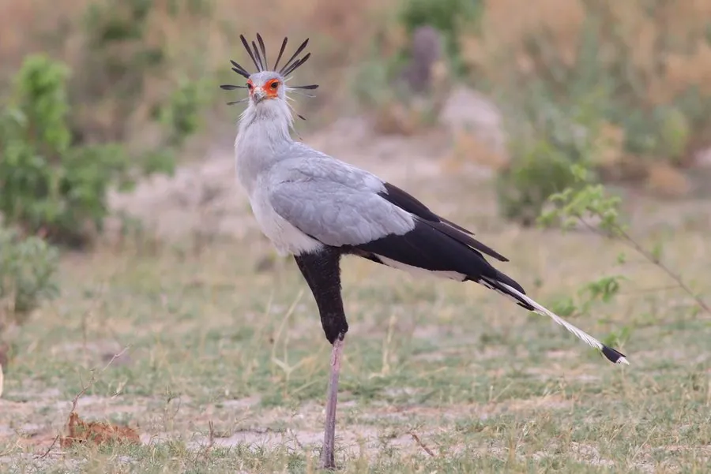

鸟类 · 动物界
蛇鹫 Sagittarius serpentarius

长腿高挑的非洲猛禽，头后羽冠像插着羽毛笔的书记员，尾羽修长，擅长在地面踩踏捕食毒蛇和小动物。
- 分类
- 门脊索动物门纲鸟纲目鹰形目科蛇鹫科属蛇鹫属
- 栖息环境
- 非洲的稀树草原、开阔草地和灌丛，多在地面活动
- 地理分布
- 非洲撒哈拉以南的草原和稀树草原，中国无分布
- 保护级别
- IUCN 濒危（EN）；非中国分布物种
物种志
蛇鹫体长 125–150 cm，体重 3.2–4.3 kg，翼展 190–220 cm，是体形高大的猛禽。它的头颈部羽毛灰白，头后长着一排黑色羽冠，像插在耳后的羽毛笔，因此得名“秘书鸟”；脸部裸露的皮肤橙红，眼睛周围有黑色羽毛，喙钩曲，腿细长如鹤，尾羽修长，飞羽和腿羽为黑色。
蛇鹫广泛分布于非洲撒哈拉以南的稀树草原和草地，是非洲特有的猛禽。它们主要在地面活动，捕食蛇、蜥蜴、昆虫、小型哺乳动物和其它鸟类的卵，捕蛇时用长腿踩踏猎物，再迅速用喙抓住并吞下。蛇鹫的领域意识很强，通常成对活动。繁殖期在矮树或灌木上筑巢，每窝产卵 2–3 枚，孵化约 42–45 天，雏鸟要由亲鸟喂养数月。由于草原开垦和火灾，其种群有所下降，目前被列为濒危物种。
形态与习性
- 食性蛇、蜥蜴、昆虫、小型哺乳动物和鸟卵
- 体长125–150 cm，含修长的尾羽
- 体重3.2–4.3 kg
- 翼展190–220 cm
- 繁殖每窝 2–3 枚卵，孵化约 42–45 天
- 寿命野外约 15–20 年
- 捕猎用长腿踩踏猎物，再用喙抓住吞下
趣味知识
- 蛇鹫的英文名意为“秘书鸟”，因为头后羽冠像插在耳后的羽毛笔。
- 它捕蛇时会用长腿反复踩踏，再迅速用喙咬住蛇头。
- 蛇鹫通常成对在草原上漫步，领域意识很强。
- 它飞行时会先助跑，靠宽大的翅膀借热气流升空。